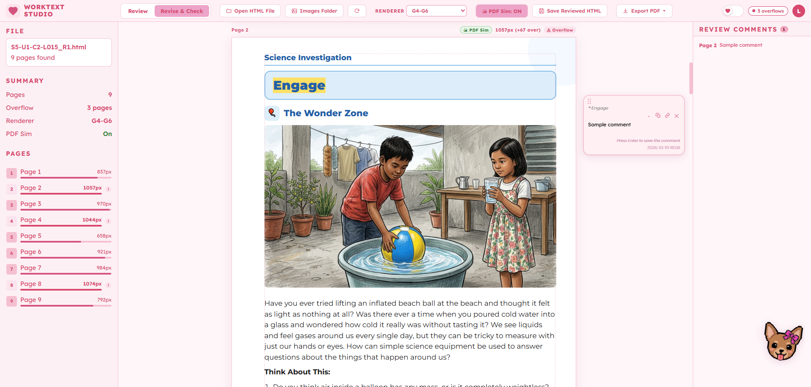
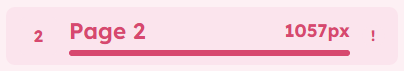
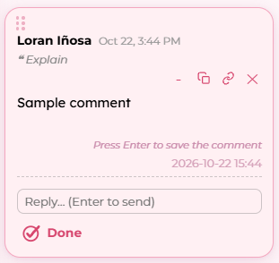
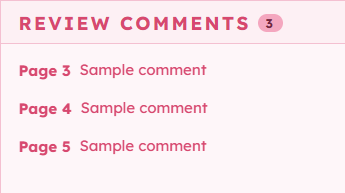
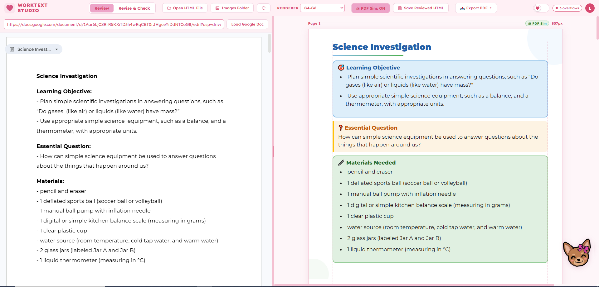
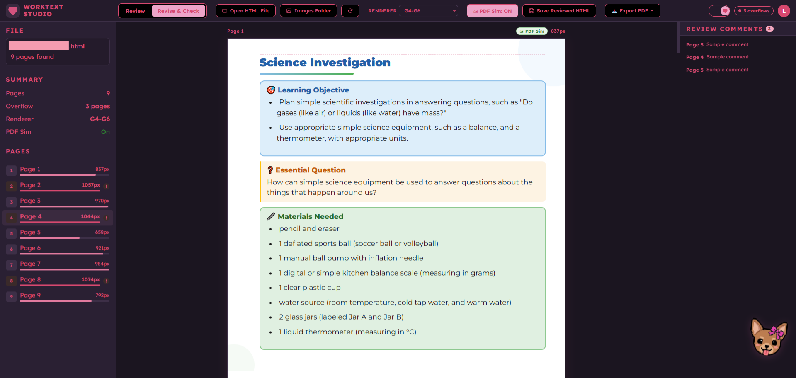
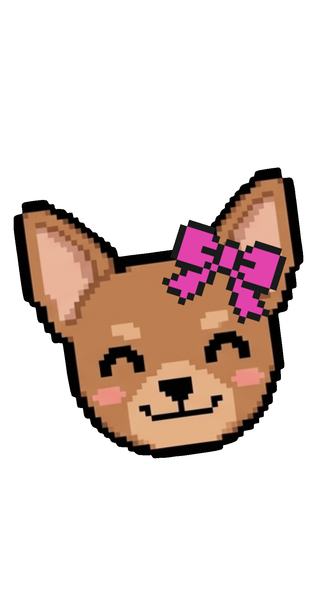

Featured · In use by my team
Worktext Studio
A browser tool I built so my team can check and review worktext pages before they're turned into PDFs.
- My role
- Built it, and I still manage and improve it
- Used by
- My team, in real production work
- Type
- Browser tool
- Built with
- JavaScript, with a serverless Apps Script backend

The problem
Why I built it
Our worktexts are written as web pages, then turned into PDFs. Problems like a page running too long or an image being too big only showed up after the PDF was made.
That meant another round: review, fix, make the PDF again. Every round took time, and review comments were scattered in different places.
How it works
Check, review, finish
-

Check
Load a worktext and see every page right away. PDF Simulation shows how it will look as a PDF, using the rules for the right grade level. Pages that run too long get a red border and a warning.
-

Review
Reviewers highlight text or click an image to leave a sticky-note comment. Signed-in teammates all see the same comments, and can reply and mark them done.
-

Finish
A comments panel lists everything flagged, like a checklist. Click one to jump straight to its page. When everything's fixed, export the PDF.
Two modes
Review puts the Google Doc right beside the worktext, for comparing the two side by side. Revise & Check is the full workspace for fixing pages. You can switch anytime without losing your place.


Under the hood
How I built it
-
Free to run
It's hosted for free on GitHub Pages. Teammates sign in with the company Google accounts they already have, and comments are saved in a Google Sheet. No servers, no bills.
-
Comments follow the content
When pages are edited, added or removed, each comment finds its text again. If it lands on a new page, it says "Moved from page X" so nothing gets missed.
-
It grew with my team
It started as a simple preview page. Every feature after that came from watching how my team actually used it.
- JavaScript
- HTML & CSS
- Google Sign-In
- Apps Script
- Google Sheets
- GitHub Pages
Little extras
Made to feel nice
Light and dark theme for long working sessions. And Chloe, a little companion who says hi when you open the tool and cheers my teammates on while they work.
Chloe was my dog. Ever since I was a teenager, she sat or slept beside me every time I studied, and later, every time I worked. She's gone now, but having her in the tool feels like she's still right beside me, cheering me on.

Results
What changed
Worktext Studio is part of my team's everyday production work. Layout problems now get caught while pages are being edited, before any PDF is made.